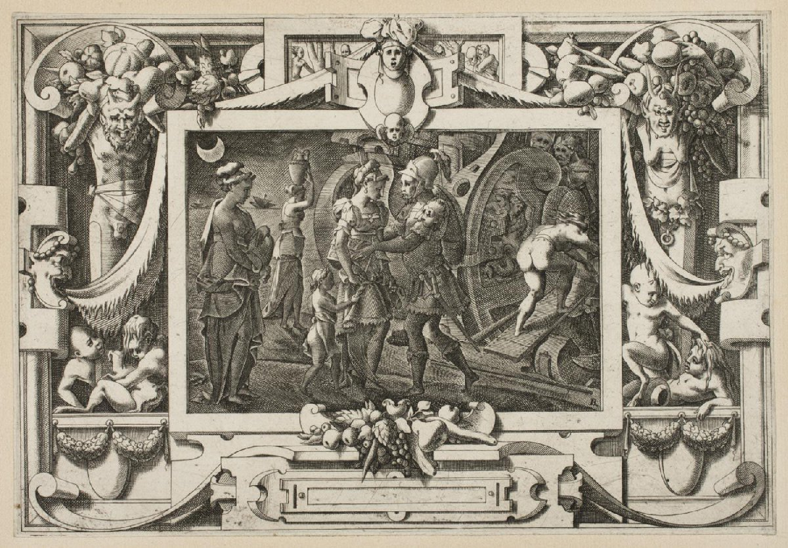

HISTÓRIA
- Quem foi o imperador romano que ordenou que queimassem Roma?
- Cícero
- Júlio Cesar
- Marco Polo
- Nero
- O que havia dentro da cesta de chapeuzinho vermelho?
- Algumas melancias
- Um sanduíche de atum
- Torta de maçã
- Biscoitos de nata caseiros
- O que os dinossauros usavam para limpar os dentes após uma refeição?
- Escovas de dente pré-históricas
- Grãos de areia
- Raízes de árvores
- Petróleo
- Qual evento histórico inspirou a invenção da poltrona de massagem?
- A Revolução Francesa
- A criação do horário de verão
- A Maratona de Atenas
- A Guerra dos Canudos
OUTRAS PROVAS